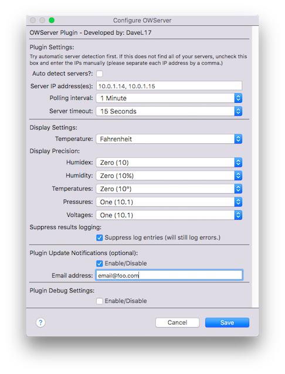

The OWServer plugin allows users to connect the Embedded Data Systems (EDS) 1-Wire Server to the Indigo Home Control Server. The user creates devices that represent
individual 1-Wire devices.
Installation

Installation is easy. Download and extract the Indigo Plugin file onto your Indigo server machine. Double-click the plugin file and follow the prompts. Presently, the
plugin contains functionality for many 1-Wire devices including:
EDS 1-Wire Server (OW-SERVER-ENET 1, 2 and WiFi) - the EDS server itself.
Dallas DS18B20 Temperature Sensor
Dallas DS18S20 Temperature Sensor
Dallas DS2406 Dual Switch Plus Memory
Dallas DS2408 8-Channel Addressable Switch
Dallas DS2423 Ram with Counters
Dallas DS2438 Smart Battery Monitor
Dallas DS2450 Quad Converter
EDS0064 Temperature Sensor with Counter
EDS0065 Temperature and Humidity Sensor
EDS0066 Temperature and Barometric Pressure Sensor
EDS0067 Temperature and Light
EDS0068 Temperature, Humidity, Pressure, Light
EDS0070 Vibration Sensor
EDS0071 RTD Interface, 4 wire
EDS0080 Octal 4-20 Milliamp Input
EDS0082 Octal Current Input
EDS0083 Quad 4-20 Milliamp Input
EDS0085 Quad 0-10 Volt Input
EDS0090 Octal Discrete IO
The plugin supports multiple servers--and a theoretically unlimited number of devices.
Within the plugin preferences, enter the IP number(s) of the server(s) you want to use. The plugin has the ability to auto-detect servers, so you may want to try
this feature first. If auto-detect is selected, the manually-entered list of IP addresses will be ignored.
To get the most out of the plugin, you should create a set of devices. It is recommended that you create a server device which you can use to monitor the health
of your EDS server. You should also create a 1-Wire device to track the information reported by that device for use in Indigo.